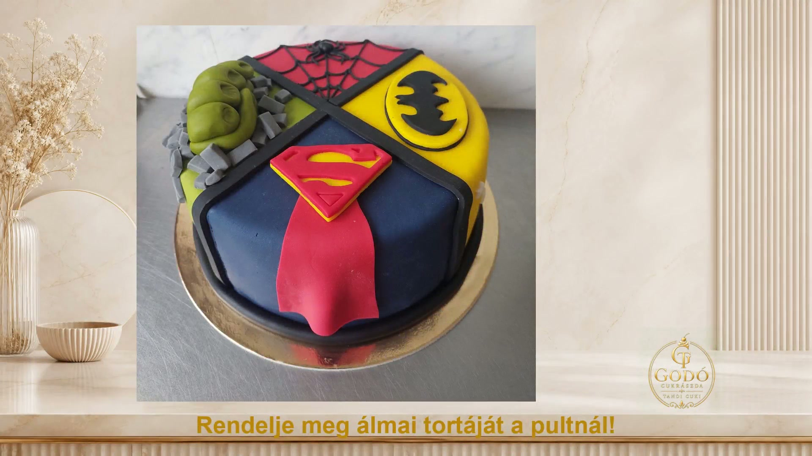

Rádió / Menü
Godó Cukrászda
Tortabemutató és élő rádió
Rádióállomás
Rádió 1
Sunshine Rádió
Juventus Rádió
Danubius Rádió
MegaDance Rádió
Retro Rádió
Déjà Vu Rádió
Indítás / Újrapróbálás
Rádió leállítása
Menü elrejtése
Az Indítás gombbal kapcsolható be a rádió.
Hibakeresési adatok